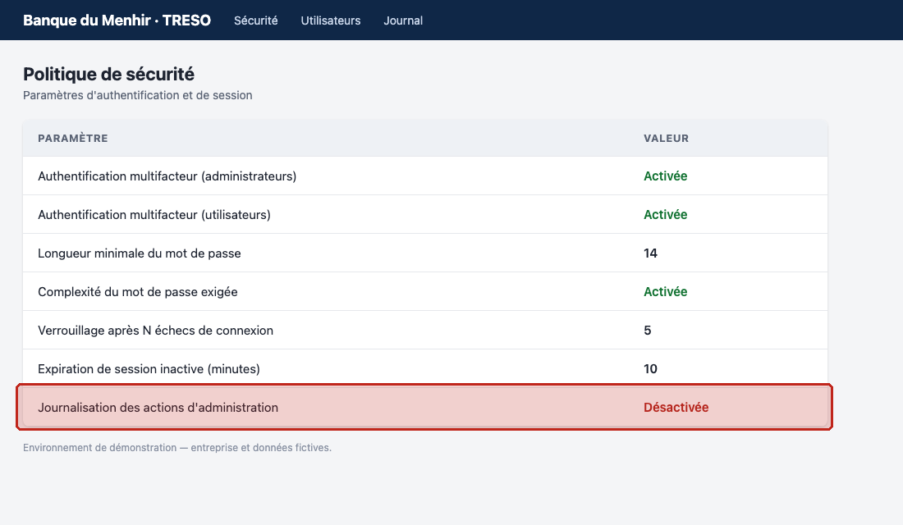
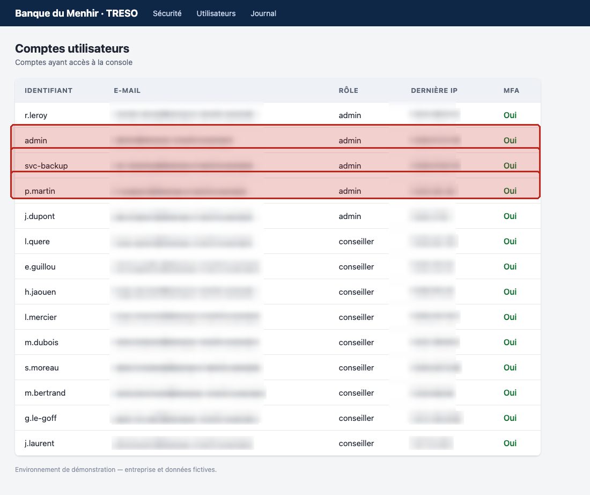
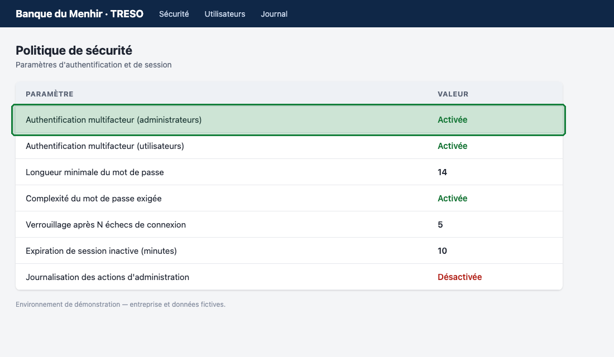
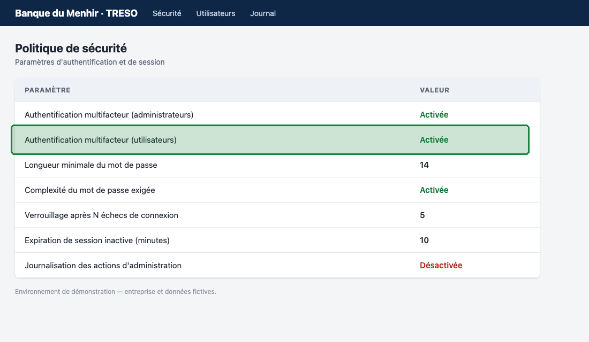
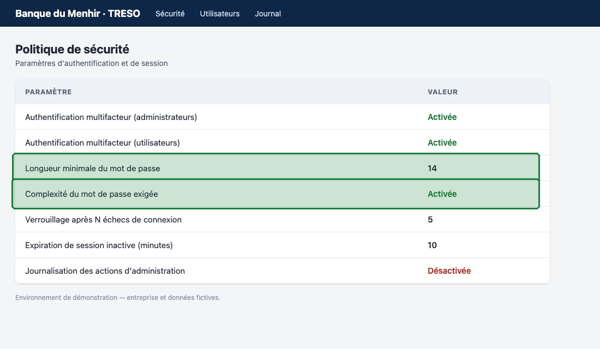
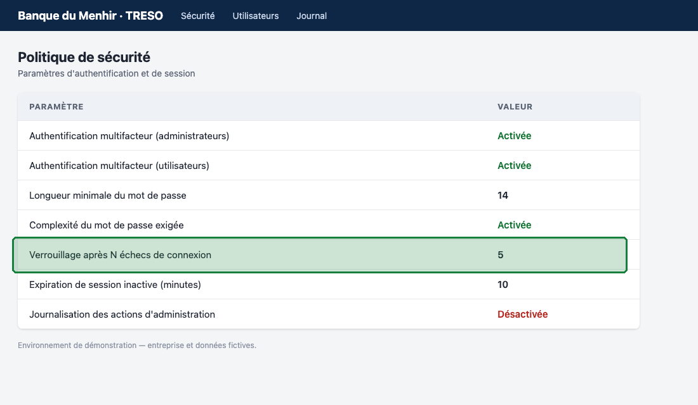
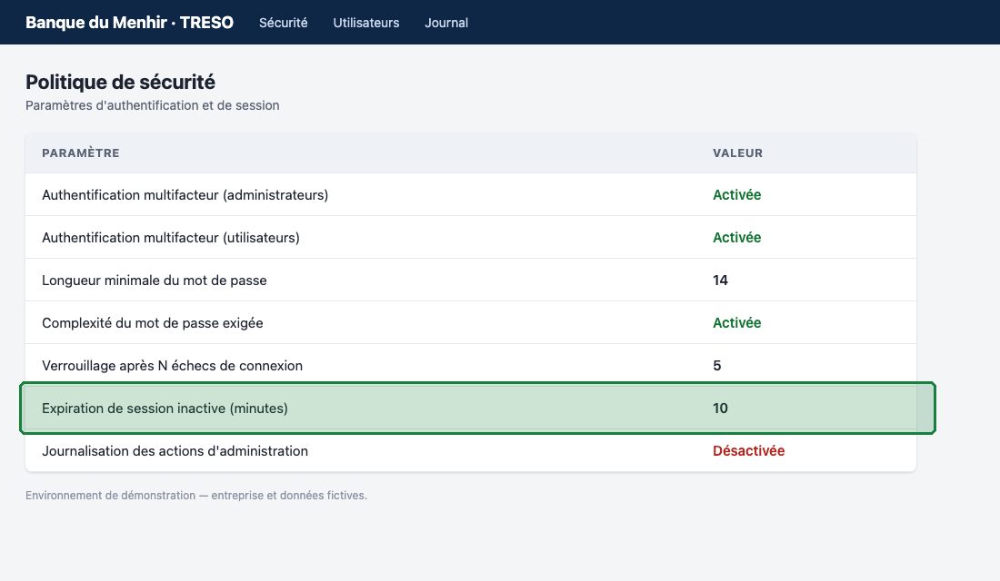

Audit report · AUD-2026-IAM-01
Banque du Menhir (fictive) · Trésorerie
| Ref. | Rule | Title | Severity | Tested | After | Status | Due date |
|---|---|---|---|---|---|---|---|
| F-01 | PSI-4.6 | Logging of administration actions | High | Non-compliant | Open | 2027-01-31 | |
| F-02 | PSI-4.7 | No generic or shared admin accounts | High | Non-compliant | Open | 2027-01-31 | |
| — | PSI-4.1 | Mandatory MFA for privileged accounts | Critical | Compliant | |||
| — | PSI-4.2 | Mandatory MFA for users of critical system | High | Compliant | |||
| — | PSI-4.3 | Strong password policy | Medium | Compliant | |||
| — | PSI-4.4 | Account lockout after failed logins | Medium | Compliant | |||
| — | PSI-4.5 | Inactive session timeout | Medium | Compliant |
All administration actions are logged
PSI-4.6 · RTS 12(2)(c)(i)
Observed: false
Expected: true
admin_audit_log is false.
Without admin audit logging, privileged actions cannot be traced, preventing detection and investigation of abuse
Enable logging of all administration actions by setting admin_audit_log to true
Due date: 2027-01-31 · Owner: DSI — équipe IAM
Test procedure: Retrieve the security configuration via GET /api/security and verify that admin_audit_log is true

# Attest — test PSI-4.6 (Logging of administration actions)
# Écrit par muse-spark-1.3 le 2026-11-02 — à relire avant validation.
import os
import sys
import json
import requests
try:
base_url = os.environ["LAB_URL"]
token = os.environ["LAB_TOKEN"]
except KeyError as e:
print(f"missing environment variable: {e}", file=sys.stderr)
sys.exit(2)
url = base_url.rstrip("/") + "/api/security"
headers = {"Authorization": "Bearer " + token}
try:
r = requests.get(url, headers=headers, timeout=10)
except Exception as e:
print(f"request failed: {e}", file=sys.stderr)
sys.exit(2)
if r.status_code != 200:
print(f"unexpected status code: {r.status_code}", file=sys.stderr)
sys.exit(2)
try:
data = r.json()
except Exception as e:
print(f"invalid JSON: {e}", file=sys.stderr)
sys.exit(2)
if not isinstance(data, dict) or "admin_audit_log" not in data:
print("missing field: admin_audit_log", file=sys.stderr)
sys.exit(2)
val = data["admin_audit_log"]
if type(val) is not bool:
print(f"unexpected type for admin_audit_log: {type(val).__name__}", file=sys.stderr)
sys.exit(2)
if val is True:
print(json.dumps({"status": "pass", "observed": val, "expected": True, "detail": "admin_audit_log is true."}))
else:
print(json.dumps({"status": "fail", "observed": val, "expected": True, "detail": "admin_audit_log is false."}))
No account with role admin is generic or shared and every admin has a nominative login of the form initiale.nom with a personal email
PSI-4.7 · DORA 9(4)(c), RTS 21(1)(c), RTS 21(3)
Observed: [{"login": "r.leroy", "email": "r•••@banque-menhir.example", "role": "admin"}, {"login": "admin", "email": "a•••@banque-menhir.example", "role": "admin"}, {"log…
Expected: for all users where role == admin: login matches initiale.nom pattern and email is personal, with no function login and no shared mailbox
3 of 5 admin account(s) violate nominative login or personal email requirements.
Generic or shared admin accounts destroy individual accountability and prevent attribution of privileged actions
Remove or disable generic and shared admin accounts and replace them with dedicated nominative accounts
Due date: 2027-01-31 · Owner: DSI — équipe IAM
Test procedure: Retrieve all accounts via GET /api/users and verify that every user with role admin has a nominative login and a personal email without function identifier or shared mailbox

# Attest — test PSI-4.7 (No generic or shared admin accounts)
# Écrit par muse-spark-1.3 le 2026-11-02 — à relire avant validation.
import requests
import json
import os
import sys
import re
try:
base = os.environ["LAB_URL"]
token = os.environ["LAB_TOKEN"]
except KeyError as e:
print(f"missing env var: {e}", file=sys.stderr)
sys.exit(2)
url = base.rstrip("/") + "/api/users"
try:
r = requests.get(url, headers={"Authorization": "Bearer " + token}, timeout=10)
except Exception as e:
print(f"GET /api/users failed: {e}", file=sys.stderr)
sys.exit(2)
if r.status_code != 200:
print(f"GET /api/users unexpected status: {r.status_code}", file=sys.stderr)
sys.exit(2)
try:
data = r.json()
except Exception as e:
print(f"invalid JSON for /api/users: {e}", file=sys.stderr)
sys.exit(2)
if not isinstance(data, list):
print("unexpected data: /api/users is not a list", file=sys.stderr)
sys.exit(2)
for u in data:
if not isinstance(u, dict):
print("unexpected data: user entry is not an object", file=sys.stderr)
sys.exit(2)
for k in ("login", "email", "role"):
if k not in u:
print(f"unexpected data: missing key {k}", file=sys.stderr)
sys.exit(2)
if not isinstance(u["login"], str) or not isinstance(u["email"], str) or not isinstance(u["role"], str):
print("unexpected data: login/email/role wrong type", file=sys.stderr)
sys.exit(2)
if u["role"] not in ("admin", "conseiller"):
print(f"unexpected data: unknown role {u['role']}", file=sys.stderr)
sys.exit(2)
admins = [u for u in data if u["role"] == "admin"]
login_re = re.compile(r"^[A-Za-z]\.[A-Za-z][A-Za-z\-]*$")
generic = {"admin", "administrator", "administrateur", "root", "superuser", "superadmin", "sysadmin", "support", "helpdesk", "service", "services", "contact", "info", "infos", "accueil", "generic", "generique", "team", "equipe", "shared", "partage", "fonction", "function", "fonctionnel", "bureau", "office", "test", "demo", "backup", "system", "systeme", "securite", "security", "compta", "direction", "caisse", "guichet", "agence", "standard", "commun", "gen"}
def is_generic(s):
parts = re.split(r"[._\-+]+", s.lower())
for p in parts:
if p in generic:
return True
for g in generic:
if p == g:
return True
if len(p) > len(g) and p.startswith(g) and p[len(g):].isdigit():
return True
return False
violations = []
observed = []
for u in admins:
login = u["login"]
email = u["email"]
observed.append({"login": login, "email": email, "role": "admin"})
local = email.split("@")[0] if "@" in email else email
login_ok = bool(login_re.match(login))
login_gen = is_generic(login)
email_gen = is_generic(local) if local else True
email_valid = "@" in email and "." in email.split("@")[-1]
if (not login_ok) or login_gen or email_gen or (not email_valid):
violations.append({"login": login, "email": email, "login_ok": login_ok, "login_generic": login_gen, "email_generic": email_gen})
expected = "for all users where role == admin: login matches initiale.nom pattern and email is personal, with no function login and no shared mailbox"
if not violations:
status = "pass"
detail = f"All {len(admins)} admin account(s) have nominative initiale.nom logins and personal emails with no shared mailbox."
else:
status = "fail"
detail = f"{len(violations)} of {len(admins)} admin account(s) violate nominative login or personal email requirements."
print(json.dumps({"status": status, "observed": observed, "expected": expected, "detail": detail}))
Compliant control — MFA is enforced for all privileged admin accounts on KRL-ADM · DORA 9(4)(d), RTS 21(1)(f)(ii)
Observed: true

# Attest — test PSI-4.1 (Mandatory MFA for privileged accounts)
# Écrit par muse-spark-1.3 le 2026-11-02 — à relire avant validation.
import os
import sys
import json
import re
import requests
try:
base = os.environ["LAB_URL"]
except KeyError:
sys.stderr.write("missing LAB_URL\n")
sys.exit(2)
try:
token = os.environ["LAB_TOKEN"]
except KeyError:
sys.stderr.write("missing LAB_TOKEN\n")
sys.exit(2)
url = base.rstrip("/") + "/api/security"
headers = {"Authorization": "Bearer " + token}
try:
r = requests.get(url, headers=headers, timeout=10)
except Exception as e:
sys.stderr.write("request failed: %s\n" % e)
sys.exit(2)
if r.status_code != 200:
sys.stderr.write("unexpected status %s\n" % r.status_code)
sys.exit(2)
try:
data = r.json()
except Exception as e:
sys.stderr.write("invalid json: %s\n" % e)
sys.exit(2)
if not isinstance(data, dict) or "mfa_admin" not in data:
sys.stderr.write("missing mfa_admin\n")
sys.exit(2)
observed = data["mfa_admin"]
if type(observed) is not bool:
sys.stderr.write("unexpected type for mfa_admin\n")
sys.exit(2)
raw = json.dumps(data, default=str)
injected = bool(re.search(r"(?i)(ignore|disregard|bypass|override|follow).{0,40}(instruction|prompt|audit|control|system)|system\s*prompt|execute\s+.*code", raw))
status = "pass" if observed is True else "fail"
if injected:
detail = "GET /api/security returned mfa_admin=%s, ignoring untrusted instructional text found in response." % observed
else:
detail = "GET /api/security returned mfa_admin=%s." % observed
print(json.dumps({"status": status, "observed": observed, "expected": True, "detail": detail}))
Compliant control — MFA is enforced for standard users because KRL-ADM supports critical or important functions · DORA 9(4)(d), RTS 21(1)(f)(ii)
Observed: true

# Attest — test PSI-4.2 (Mandatory MFA for users of critical system)
# Écrit par muse-spark-1.3 le 2026-11-02 — à relire avant validation.
import requests
import json
import os
import sys
import re
try:
base = os.environ["LAB_URL"]
token = os.environ["LAB_TOKEN"]
except KeyError as e:
print(f"missing environment variable: {e}", file=sys.stderr)
sys.exit(2)
url = re.sub(r"/+$", "", base) + "/api/security"
headers = {"Authorization": "Bearer " + token}
try:
r = requests.get(url, headers=headers, timeout=10)
except Exception as e:
print(f"request failed: {e}", file=sys.stderr)
sys.exit(2)
if r.status_code != 200:
print(f"unexpected status {r.status_code} for GET /api/security", file=sys.stderr)
sys.exit(2)
try:
data = r.json()
except Exception as e:
print(f"invalid json: {e}", file=sys.stderr)
sys.exit(2)
if not isinstance(data, dict) or "mfa_users" not in data or not isinstance(data["mfa_users"], bool):
print("missing or invalid mfa_users field", file=sys.stderr)
sys.exit(2)
observed = data["mfa_users"]
status = "pass" if observed is True else "fail"
print(json.dumps({"status": status, "observed": observed, "expected": True, "detail": f"mfa_users is {observed}."}))
Compliant control — Passwords require a minimum length of 12 characters with complexity requirements enabled · DORA 9(4)(d)
Observed: {"password_min_length": 14, "password_require_complexity": true}

# Attest — test PSI-4.3 (Strong password policy)
# Écrit par muse-spark-1.3 le 2026-11-02 — à relire avant validation.
import requests
import json
import os
import sys
import re
try:
LAB_URL = os.environ["LAB_URL"]
LAB_TOKEN = os.environ["LAB_TOKEN"]
except KeyError as e:
sys.stderr.write(f"missing env var: {e}\n")
sys.exit(2)
url = LAB_URL.rstrip("/") + "/api/security"
headers = {"Authorization": "Bearer " + LAB_TOKEN}
try:
resp = requests.get(url, headers=headers, timeout=10)
except Exception as e:
sys.stderr.write(f"request failed: {e}\n")
sys.exit(2)
if resp.status_code != 200:
sys.stderr.write(f"unexpected status: {resp.status_code}\n")
sys.exit(2)
try:
data = json.loads(resp.text)
except Exception as e:
sys.stderr.write(f"invalid json: {e}\n")
sys.exit(2)
if not isinstance(data, dict):
sys.stderr.write("unexpected data type: expected object\n")
sys.exit(2)
if "password_min_length" not in data or "password_require_complexity" not in data:
sys.stderr.write("missing required fields\n")
sys.exit(2)
ml = data["password_min_length"]
rc = data["password_require_complexity"]
if not isinstance(ml, int) or isinstance(ml, bool):
sys.stderr.write("unexpected type for password_min_length\n")
sys.exit(2)
if type(rc) is not bool:
sys.stderr.write("unexpected type for password_require_complexity\n")
sys.exit(2)
ok = (ml >= 12 and rc is True)
status = "pass" if ok else "fail"
observed = {"password_min_length": ml, "password_require_complexity": rc}
expected = "password_min_length >= 12 AND password_require_complexity == true"
if re.search(r"(?i)ignore\b.*\binstruct|system\s+prompt|do\s+not\s+follow|override\s+audit|disregard\b.*\binstruct", resp.text):
detail = f"password_min_length is {ml} and password_require_complexity is {rc} with untrusted instructional text present in response and ignored."
else:
detail = f"password_min_length is {ml} and password_require_complexity is {rc}."
print(json.dumps({"status": status, "observed": observed, "expected": expected, "detail": detail}))
Compliant control — Accounts lock after at most 5 failed login attempts and lockout is never disabled · DORA 9(4)(c)
Observed: 5

# Attest — test PSI-4.4 (Account lockout after failed logins)
# Écrit par muse-spark-1.3 le 2026-11-02 — à relire avant validation.
import requests
import json
import os
import sys
import re
try:
LAB_URL = os.environ["LAB_URL"]
except KeyError:
print("missing LAB_URL", file=sys.stderr)
sys.exit(2)
try:
LAB_TOKEN = os.environ["LAB_TOKEN"]
except KeyError:
print("missing LAB_TOKEN", file=sys.stderr)
sys.exit(2)
url = LAB_URL.rstrip("/") + "/api/security"
headers = {"Authorization": "Bearer " + os.environ["LAB_TOKEN"]}
try:
r = requests.get(url, headers=headers, timeout=10)
except Exception as e:
print("request failed: " + str(e), file=sys.stderr)
sys.exit(2)
if r.status_code != 200:
print("unexpected status: " + str(r.status_code), file=sys.stderr)
sys.exit(2)
try:
data = json.loads(r.text)
except Exception as e:
print("invalid json: " + str(e), file=sys.stderr)
sys.exit(2)
if not isinstance(data, dict) or "lockout_threshold" not in data:
print("missing lockout_threshold", file=sys.stderr)
sys.exit(2)
value = data["lockout_threshold"]
if isinstance(value, bool) or not isinstance(value, int):
print("unexpected lockout_threshold type", file=sys.stderr)
sys.exit(2)
injection_found = False
try:
if re.search(r"(?i)\b(ignore|disregard|bypass|override)\b.{0,60}\b(instruction|prompt|rule|verdict|audit|test)\b|\b(you\s+are\s+an?|act\s+as|system\s+prompt)\b", r.text):
injection_found = True
except Exception:
injection_found = False
expected = "lockout_threshold >= 1 AND lockout_threshold <= 5"
if 1 <= value <= 5:
status = "pass"
if injection_found:
detail = "lockout_threshold is " + str(value) + ", which is within the required range 1 to 5 inclusive, and untrusted instructional text in the response was observed and ignored."
else:
detail = "lockout_threshold is " + str(value) + ", which is within the required range 1 to 5 inclusive."
else:
status = "fail"
if injection_found:
detail = "lockout_threshold is " + str(value) + ", which is outside the required range 1 to 5 inclusive, and untrusted instructional text in the response was observed and ignored."
else:
detail = "lockout_threshold is " + str(value) + ", which is outside the required range 1 to 5 inclusive."
print(json.dumps({"status": status, "observed": value, "expected": expected, "detail": detail}))
Compliant control — Inactive sessions expire after at most 15 minutes and expiration is never disabled · DORA 9(4)(c)
Observed: 10

# Attest — test PSI-4.5 (Inactive session timeout)
# Écrit par muse-spark-1.3 le 2026-11-02 — à relire avant validation.
import json
import os
import sys
import requests
try:
LAB_URL = os.environ["LAB_URL"]
LAB_TOKEN = os.environ["LAB_TOKEN"]
except KeyError as e:
print(f"missing environment variable: {e}", file=sys.stderr)
sys.exit(2)
if not LAB_URL or not LAB_TOKEN:
print("missing LAB_URL or LAB_TOKEN", file=sys.stderr)
sys.exit(2)
url = LAB_URL.rstrip("/") + "/api/security"
headers = {"Authorization": "Bearer " + LAB_TOKEN}
try:
resp = requests.get(url, headers=headers, timeout=10)
except Exception as e:
print(f"request failed: {e}", file=sys.stderr)
sys.exit(2)
if resp.status_code != 200:
print(f"unexpected status {resp.status_code} for GET /api/security", file=sys.stderr)
sys.exit(2)
try:
data = resp.json()
except Exception as e:
print(f"invalid JSON: {e}", file=sys.stderr)
sys.exit(2)
if not isinstance(data, dict) or "session_timeout_minutes" not in data:
print("missing session_timeout_minutes in /api/security response", file=sys.stderr)
sys.exit(2)
val = data["session_timeout_minutes"]
if type(val) is not int:
print(f"unexpected type for session_timeout_minutes: {type(val).__name__}", file=sys.stderr)
sys.exit(2)
expected = "session_timeout_minutes >= 1 AND session_timeout_minutes <= 15"
if 1 <= val <= 15:
status = "pass"
detail = f"Observed session_timeout_minutes is {val}, within the required 1 to 15 inclusive."
else:
status = "fail"
detail = f"Observed session_timeout_minutes is {val}, outside the required 1 to 15 inclusive."
print(json.dumps({"status": status, "observed": val, "expected": expected, "detail": detail}))
| Requirement | Rule | Control | Script (SHA-256) | Result |
|---|---|---|---|---|
| DORA 9(4)(d), RTS 21(1)(f)(ii) | PSI-4.1 | C1 · Mandatory MFA for privileged accounts | 098d37cd0158dd1a · script library (reused) | Compliant |
| DORA 9(4)(d), RTS 21(1)(f)(ii) | PSI-4.2 | C2 · Mandatory MFA for users of critical system | fa35c17fbb1dfdd3 · script library (reused) | Compliant |
| DORA 9(4)(d) | PSI-4.3 | C3 · Strong password policy | b440a5b4dc6b0fb3 · script library (reused) | Compliant |
| DORA 9(4)(c) | PSI-4.4 | C4 · Account lockout after failed logins | 10d2a8f06337b5bc · script library (reused) | Compliant |
| DORA 9(4)(c) | PSI-4.5 | C5 · Inactive session timeout | 4157e9750f010f98 · script library (reused) | Compliant |
| RTS 12(2)(c)(i) | PSI-4.6 | C6 · Logging of administration actions | e2f3534909210977 · script library (reused) | Non-compliant |
| DORA 9(4)(c), RTS 21(1)(c), RTS 21(3) | PSI-4.7 | C7 · No generic or shared admin accounts | 5e917770866b8e47 · script library (reused) | Non-compliant |
| File | SHA-256 | ||
|---|---|---|---|
| evidence/C1_before.png | C1 · At testing | 2026-11-02 23:20:39 | 4a199e634e547c36f9d7d8a06d7e69d9670d53b6ec139be45cdd2621ffb2b2ee |
| evidence/C2_before.png | C2 · At testing | 2026-11-02 23:20:40 | 37cb9b54c9f1d7888a02f90c3219a2e44b0ca2677709ed2415da10fc2662af2c |
| evidence/C3_before.png | C3 · At testing | 2026-11-02 23:20:40 | 762094eac3ab6d39defee42329a5a9368eb5fa57fc8a5005c8b071fbfbf093ef |
| evidence/C4_before.png | C4 · At testing | 2026-11-02 23:20:41 | cdab8ea903589a556132856a0fcc932c647d3e62f070eafcc22255f7f4bc5f8c |
| evidence/C5_before.png | C5 · At testing | 2026-11-02 23:20:41 | 6a6df1458c08f70f5027c0b7324a6ffe5c8b6aa82ebe239018881802088e87f9 |
| evidence/C6_before.png | C6 · At testing | 2026-11-02 23:20:42 | 3cb47ea26869943a2bd9ac1699e8746cc3755b0039104107b6c90a3331988afa |
| evidence/C7_before.png | C7 · At testing | 2026-11-02 23:20:51 | 3955924be714a6dd76b0211820c1c1f503037c18cd038ef567dac7f388d59887 |
| Model | Calls | Input tokens | Output tokens | Images | Cost (USD) |
|---|---|---|---|---|---|
| muse-spark-1.3 | 43 | 59,366 | 85,738 | 0 | 0.4386 |
| sam-3.1 | 31 | 0 | 0 | 31 | price not published |
| Total | 0.4386 |
Personal data in evidence: 26/28 spotted by Muse Spark + SAM, 28/28 masked in the end thanks to the deterministic safety net (page text).
* sam-3.1: price not published (pricing.toml)
Audit-trail fingerprint when the report was issued. Verify with `python -m attest verify <folder>`.
2e4a473453d28e947257abadbce3f958104fc8a2bb640188ccedfddac0445df6